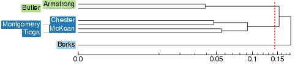

While MDS displays dialect continua, cluster analysis can be used for classifying dialects and identifying dialect areas. Clustering is the process of dividing a set of objects into groups (clusters). In our case, the objects are geographic places and we want to divide them into groups based on their linguistic similarity.
Cluster analysis is applied to the distance matrix with the pair-wise aggregate linguistic distances between places. In clustering, groups are merged based on similarity. To start with, each place is a cluster of its own, a cluster with only one element. The two places that have the smallest linguistic distance in the distance table are merged into a cluster. Then the difference is calculated between that new cluster, and all remaining places. Based on the new distances, again, the objects with the smallest difference are merged. And so on, until all places are merged into one big cluster.
| The history of the clustering procedure is displayed in a dendrogram: | |
In this example dendrogram, Armstrong and Butler are the two places with the smallest linguistic distance in the distance matrix and they have been grouped together first. After that Chester and Montgomery have been joined, and in the third step McKean and Tioga. After these pairs have been formed, the clusters containing Chester and Montgomery and McKean and Tioga are joined to form a cluster with four items. Berks has such a large distance to all other sites that it has been merged with the rest only in the very last step of clustering.
When making a dialect classification, you proceed from the right to the left in the dendrogram until you find the break point with as many branches as you want groups in your classification. The break point is marked with a read line in the dendrograms below.
| So if one would like to make a division into two clusters of this small data set, Berks would be in one group by itself and all the other places would form the second group together. |
| In a division into three groups, there would be one group with one member (Berks), one group with four members, and one group with two members. |  |
A map can be created by coloring the area of each cluster with a distinct color. The colors in these maps are arbitrary. Similarity of colors does not imply linguistic similarity, but each distinct color simply denotes one cluster. This is how a cluster map with four clusters would look:

A problem with cluster analysis is that it is a relatively unstable method. Small changes in the distance matrix can lead to large changes in the clustering results, which makes the results of clustering unreliable. Different methods have been developed to solve this problem. One such method is fuzzy clustering. Fuzzy clustering means that the original distance matrix is contaminated with (varying) small amounts of random noise. This is done several times and each time clustering is performed on the contaminated matrix. After that we count how many times each cluster has appeared. Clusters that appear in many runs of the analysis with added noise are particularly stable ones. The results are displayed in a probabilistic dendrogram:

The percentages in the probabilistic dendrogram indicate how many times each cluster was encountered in the repeated clustering with noise. In the example above, the largest clusters have been encountered in all the iterations and have a probability of 100%. We can therefore be pretty sure that these are real clusters. On the lower levels the percentages are somewhat smaller, so we cannot be completely sure about these clusters.
Go to Fuzzy clustering - probabilistic dendrogram in your Gabmap project.
| Which dialect groups in Pennsylvania can be identified with high confidence? |
Note that the colors in the probabilistic dendrogram are from a different analysis and are there to help you identify the places in the map under the dendrogram. This map is also displayed at Fuzzy clustering - fuzzy cluster maps. The map visualizes something between MDS and cluster analysis: main dialect groups are identified in the map, but continuous relationships are displayed for places which cannot be put in one group with high probability. The map is created by running MDS on the branch lengths of the dendrogram (so-called cophenetic distances) instead of on the original linguistic distances.
Results of clustering without noise are found under Discrete clustering - cluster maps and dendrograms in Gabmap. Remember that caution should be taken when interpreting these results, because cluster analysis is not a stable technique (see above).
You can inspect the results of four different clustering algorithms in this view in Gabmap. The four methods are Complete Link, Group Average, Weighted Average and Ward's Method. The different algorithms have different ways of determining how distances between newly formed clusters are calculated in the clustering process. The different methods have different biases, for example, Ward's Method favors equal size clusters, while the other methods are more true to the original linguistic distances.
The default cluster map represents eight clusters obtained by using Weighted Average for clustering.
| Look at the map of eight clusters with Weighted Average as clustering method. Compare this map to the difference maps (Differences - statistics and difference maps). Is there an agreement between the line maps on the one hand and the cluster map on the other? What is similar? What is different? |
Now, let's change clustering method. You can change the parameters in the box under the map in this view. Choose Ward's Method instead of Weighted Average, and then click Change settings. The default number of clusters displayed is eight, but you can change the number of clusters displayed yourself. Choose six instead of eight, and then click Change settings again.
| Compare the results of six clusters using Ward's Method to the results of fuzzy clustering. Are the results similar? |
| Compare the map of six clusters using Ward's Method to the one of eight clusters with Weighted Average as clustering method. Which one is better? |
An additional method for validating the results of cluster analysis is available under Discrete clustering - cluster validation. A cluster map is displayed, and under the map, there is a plot which is actually the same MDS plot which you find at Multidimensional scaling - mds plots. The plot is colored according to the chosen cluster analysis, so that you can compare the clustering results with the results of MDS. The plot helps you to see how well separated the clusters are. If no clear, separated clouds of dots can be identified in the plot, the data set is probably truly continuous and it does not make sense to use cluster analysis.